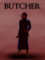

Works
Novels
|  |
BUTCHER | November 2011
It's been years now since those things, the butchers, appeared. People have found ways of outwitting them. Now the focus turns on to how the butchers came into being, and how to get rid of them. Status: Finished, awaiting revisions |
|
Silver River | November 2016
Fifteen years ago, the royal family of the Shrenuu Empire was overthrown, sending the empire into chaos. Seeing this as an opportunity to destabilize the Shrenuu Empire even further, the rival Lanuikeor Empire sent spies on a twenty-year mission to learn everything they possibly could. One of those spies is Teirik Aikren, who works at a military school in the present day. Teirik receives a message requiring him and all the other spies to return to the Lanuikeor Empire as quickly as possible. His "disappearance" from the Shrenuu Empire doesn't go quite as well as planned, and the cold war between the empires starts drawing closer and closer to an actual war. Status: Not yet written |
Short Stories
|
Yellow | May 2014
An experiment in writing in present tense. Horror. 1,789 words. Status: Can be read here |
Scripts
|
Venére Magic | August 2015
Ophélie d'Anjou lived a normal life as a princess of Gaule until dragons led by Vespasien invaded from the neighboring country of La Plaine. Following her mother's death, she takes her family's ancestral sword and flees Anjou with her childhood friend Émile and knight Michel, vowing to kill Vespasien and avenge her mother's death. Status: Finished, awaiting revisions |
Comics
|
The Gate at the End of the World | February 2017
Five people are sent to guard The Gate at the End of the World for a year. Status: Currently being posted on Smackjeeves and Tapastic |